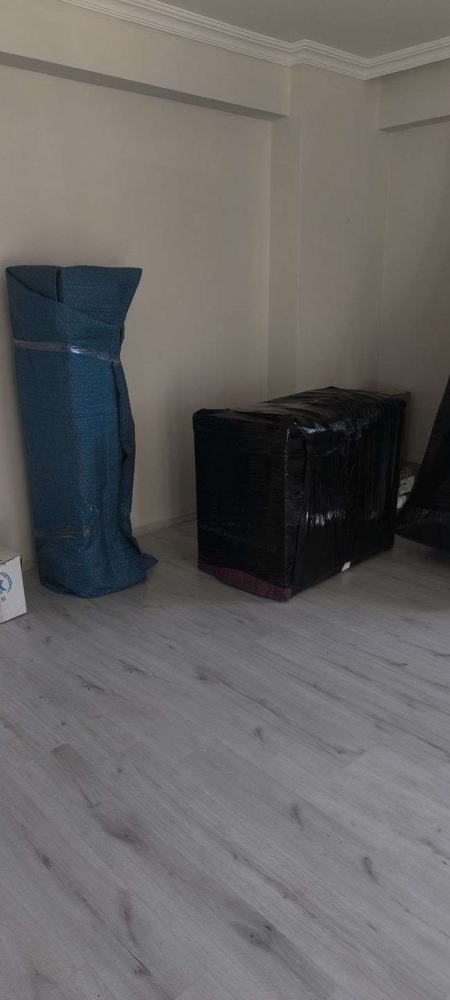

Gaziantep'te taşınmak neden farklı?
Gaziantep, eski şehir dokusu ile modern site yapılaşmasının yan yana durduğu bir şehir. Şahinbey'in Ünaldı veya Şehreküstü gibi mahallelerinde sokak genişliği 3 metrenin altına düşerken, Şehitkamil'in İbrahimli bölgesinde 20 katlı rezidanslar var. Bu iki uç arasında taşıma yapmak, tek bir standart yöntemle mümkün değil. Bu yazıda şehre özgü zorlukları ve çözümlerini topladık.
1. Dar sokak sorunu ve aktarma yöntemi
Eski mahallelerde 10 tekerlekli nakliye aracı sokağa giremez. Bu adreslerde iki araçla çalışılır: küçük aktarma aracı eşyayı kapıdan alır, ana caddedeki büyük araca aktarır. Bu yöntem yaklaşık 1-2 saat ek süre alır ama aracın sıkışması veya duvara sürtmesi riskini ortadan kaldırır. Keşif sırasında sokağınızın genişliğini ölçmemizin sebebi budur.
2. Site yönetimi izinleri
Şehitkamil ve Şahinbey'deki güvenlikli sitelerin çoğu taşınma için önceden bildirim istiyor. Bazıları araç plakası, bazıları da taşınma saatini sınırlıyor. En sık karşılaşılan kural: hafta içi 09:00-18:00 dışında taşınma yasağı. Randevu vermeden önce site yönetimini arayıp bu kuralları öğrenmek, taşınma günü kapıda beklememek için şart.
3. Otopark ve asansör aracı konumu
Dış cephe asansörünün kurulacağı alan en az 6 metre uzunluğunda ve balkona doğru açık olmalı. Sitelerde bu alan genellikle otopark. Taşınmadan bir gün önce komşulara haber verip o bölgeyi boşaltmak gerekir. Biz bu koordinasyonu üstleniyoruz ama en az 24 saat önceden bilmemiz gerekiyor.
4. Yaz aylarında sıcak faktörü
Gaziantep'te temmuz-ağustos aylarında sıcaklık 40 dereceyi aşıyor. Bu dönemde taşıma yapılacaksa sabah 06:00-07:00 gibi erken başlamak hem ekip sağlığı hem eşya güvenliği açısından önemli. Mum, kozmetik ürünler, plak ve bazı elektronikler yüksek sıcaklıkta zarar görebilir; bunları kendi aracınızda taşımanızı öneriyoruz.
5. Kış aylarında dağlık ilçeler
İslahiye ve Nurdağı gibi Amanos hattındaki ilçelerde kış aylarında buzlanma olabiliyor. Bu dönemde taşıma planlarken hava durumunu takip edip gerekirse tarihi bir gün kaydırıyoruz. Bu değişiklik için ek ücret talep edilmez.
6. Zeytin ve bahçe eşyaları
Nizip, Oğuzeli ve Araban gibi tarım ağırlıklı ilçelerde müstakil evlerin bahçesinde, deposunda veya damında biriken eşya, evin içindeki eşya kadar hacim tutabiliyor. Keşif yaparken bahçe, depo ve dam mutlaka ölçülmeli; aksi halde araç yetmez ve ikinci sefer gerekir.
7. Ay sonu ve okul dönemi yoğunluğu
Gaziantep'te kira sözleşmeleri genelde ay başında başladığı için ayın son haftası nakliyatın en yoğun dönemi. Ayrıca ağustos-eylül döneminde hem tayin hem okul kaydı taşımaları üst üste biniyor. Bu dönemlerde en az 2 hafta önceden randevu almanız gerekir.
8. Ankastre mutfak sökümü
Yeni sitelerde ankastre mutfak standart hâle geldi. Fırın, ocak, davlumbaz ve bulaşık makinesinin sökülüp yeniden monte edilmesi ayrı bir uzmanlık. Doğalgaz bağlantısı olan cihazlar için yetkili servis gerekebilir; bunu taşınmadan önce planlayın.
9. Klima sökme ve montaj
Gaziantep'te neredeyse her evde klima var. Klima sökümü gaz kaçırmadan yapılmalı, aksi halde yeni evde gaz dolumu gerekir. Bu işi nakliyat ekibi değil, klima teknisyeni yapmalı. Taşınmadan 1-2 gün önce randevu alın.
10. Su ve doğalgaz abonelikleri
GASKİ ve gaz aboneliği nakil işlemleri 2-5 iş günü sürebiliyor. Taşınmadan en az 1 hafta önce başvuru yapın ki yeni evde susuz veya sıcaksız kalmayın. Sayaç değerlerini hem eski hem yeni evde fotoğraflamayı unutmayın.
11. Eşya azaltmanın gerçek maliyeti
Taşınmanın en pahalı kısmı, kullanmadığınız eşyayı taşımaktır. Her metreküp ek hacim doğrudan fiyata yansır. Taşınmadan 2-3 hafta önce ayıklama yapıp satmak veya bağışlamak, çoğu evde taşıma maliyetinin %15-20'sini düşürüyor.
12. Taşıma günü hazırlığı
Ekip geldiğinde koridorların boş olması, evcil hayvanların ayrı bir odada olması ve değerli eşyaların (takı, evrak, nakit) ayrılmış olması işi hızlandırır. Ayrıca ilk gün kutusu hazırlayın: tuvalet kâğıdı, havlu, sabun, şarj aleti, ilaç, çay-kahve. Yeni evde ilk akşam bunları aramak istemezsiniz.